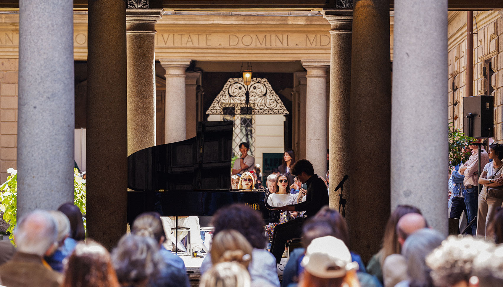
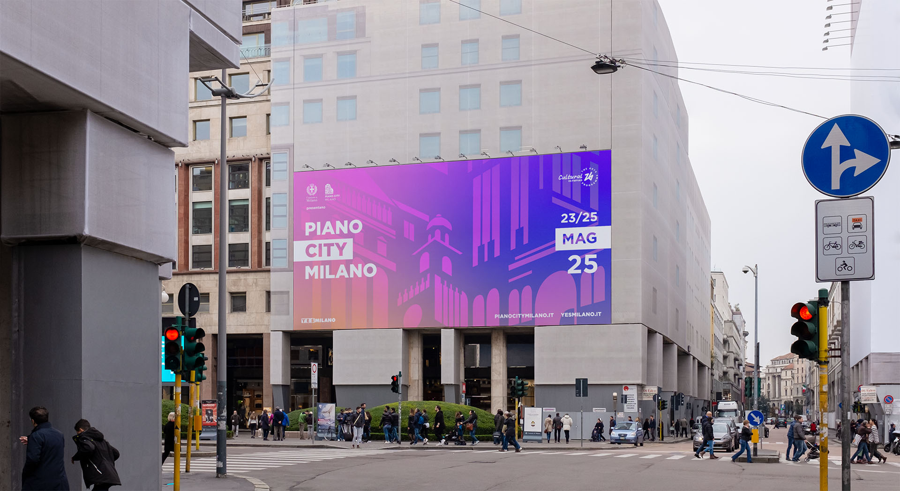
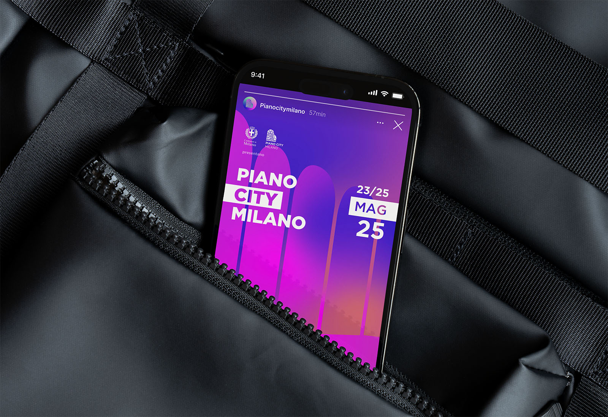

Piano City Milano 2025
-
A system of animations and a newly designed website for Milan's unique classical music festival.
Piano City Milano
is a live music event that since 2011 brings free piano concerts to the city's squares, streets, theaters and private houses.
Created in collaboration with Comune di Milano, its goal is to spread the popularity of piano and classical music.
The 2025 visual identity for the festival, created by Zetalab, was designed around animation and motion, to emphasize the connection and synesthesia with live music's tempo.
Pianos and keys get mixed with key city landmarks in a ever-flowing animation based on masks and gradients.
I took care of the motion design and animation for the campaign videos, and created the new Piano City Milano website and digital program.



Look down, look up!
-
The animations for were designed to be viewed both from ledwalls spread around the city and from portrait-sized mobile devices, to ensure continuity and capillarity to the communication campaign.
Animation through gradient
-
The objects in the animation move, warp, collide and crash following the free-flowing tempo of contemporary piano music. Their shapes continuously sink and resurface from an ever-changing background made of brightly colored gradients.
A renewed website
-
The event's website and digital program were redesigned with an overlapping cards structure, that showcases the current year's visual identity but that can be flexibly adapted to future years' communication campaigns.